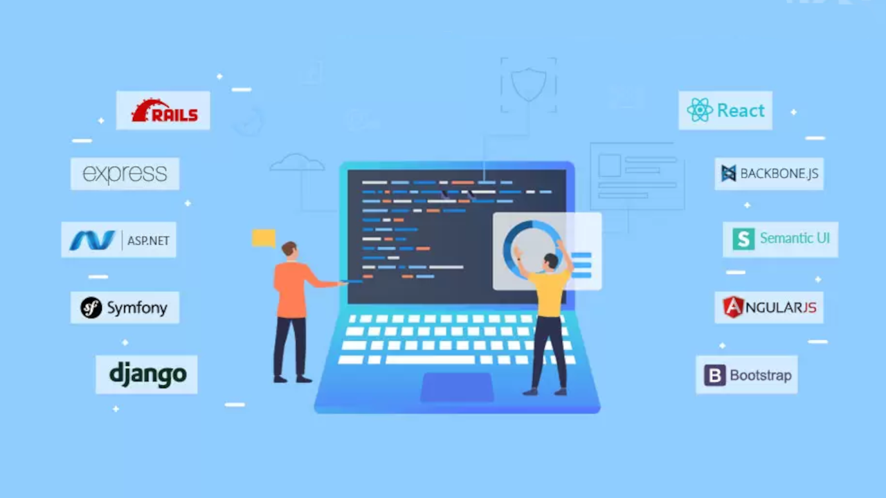

Últimas Publicaciones
Cómo mejorar tus habilidades en programación con videojuegos
Descubre los mejores consejos para aprender y aplicar nuevas tecnologías en el mundo del desarrollo web.
hoy en dia las personas creen que programar consiste en que deben memorizar todos los lenguajes de programacion.
cuando en realidad la progrmacion solo consiste en enfrentarse a problemas y saber como resolverlos usando la logica,
por ello hoy en dia se han creado varios videojuegos que van con esta tematica para enseñar a una persona a resolver problemas
usando la logica de programacion, la programacion consiste en pruebas y errores pero lo mas importante es saber como enfrentarse
a dischos problemas...........
Recargar articulo

Los frameworks más populares en 2025
Una comparativa de los frameworks más utilizados para el desarrollo frontend y backend.
React.js: Desarrollado por Facebook, React.js es una librería de JavaScript que se enfoca en la creación de interfaces de usuario (UI).
Utiliza componentes reutilizables para construir interfaces interactivas y dinámicas.
Angular: Mantenido por Google, Angular es un framework de desarrollo web basado en TypeScript.
Ofrece una estructura robusta para la creación de aplicaciones de una sola página (SPA) y aplicaciones empresariales complejas.
Vue.js: Vue.js es un framework progresivo de JavaScript que se centra en la creación de interfaces de usuario interactivas.
Es liviano y fácil de aprender, lo que lo hace ideal para proyectos de cualquier tamaño.
Node.js: Node.js es un entorno de ejecución de JavaScript del lado del servidor que permite la creación de aplicaciones web escalables y de alto rendimiento.
Es ampliamente utilizado para aplicaciones en tiempo real y APIs.
Django: Django es un framework de desarrollo web basado en Python que se destaca por su enfoque en la simplicidad, la eficiencia y la rapidez.
Es ideal para el desarrollo rápido de aplicaciones seguras y escalables.
Recargar articulo